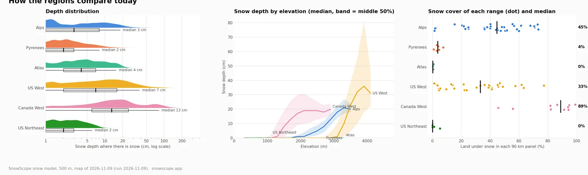

Hauteur de neige sur 100 massifs : qui a de la neige le 9 novembre 2026 ?
Nous avons découpé 100 massifs dans la carte des hauteurs de neige SnowScope du 9 novembre 2026 et nous les avons mis côte à côte, du Mont Blanc aux Coast Mountains, du Toubkal aux White Mountains. Même échelle, mêmes couleurs, une seule image.
Consultez les prévisions neige en temps réel pour Alps sur l'application SnowScopeHauteurs de neige, alertes poudreuse et carte 3D, gratuitement.
L'ouest du Canada loin devant
La neige la plus épaisse du jour est en Colombie-Britannique : 123 cm dans les Coast Mountains et 107 cm autour de Whistler. Dans le massif canadien médian, 89 % du terrain est déjà blanc, et 5 cm de neige ou plus commencent vers 1400 m.
Dans l'ouest des États-Unis, la neige est plus haute : elle commence vers 3200 m. Les San Juans du Colorado ont 111 cm sur les pentes les plus hautes, Aspen et Mt Baker 60 cm. Un massif typique de l'ouest américain est blanc à 33 %.
Les Alpes : des sommets blancs, des vallées vertes
Les Alpes démarrent fin mais large : 45 % du terrain est blanc dans le massif médian, mais là où il y a de la neige, l'épaisseur typique n'est que de 3 cm. Les Alpes françaises sont en tête aujourd'hui : 38 cm en Vanoise et 36 cm dans les Écrins, 29 cm au-dessus d'Aoste. Sous environ 2400 m, la plupart des pentes sont encore sans neige.
Encore en attente : Pyrénées, Atlas et nord-est américain
Les Pyrénées n'ont que 4 % d'enneigement, quelques centimètres sur les plus hautes crêtes. Aucun des 10 massifs de l'Atlas, du Rif au Siroua, n'a encore une vraie couche de neige, et le nord-est des États-Unis, des Adirondacks à Killington, est sec lui aussi. Au total, 17 des 100 massifs n'ont pas de neige du tout ce jour-là.

Comment lire l'image
Chaque vignette fait 90 km de large, avec des pixels de 500 m. Le bleu montre l'épaisseur de neige, le relief gris veut dire pas de neige, et le chiffre dans le coin est la neige la plus épaisse de la vignette. La ligne de couleur sous chaque vignette indique sa région, avec les mêmes couleurs que les graphiques sous la grille.
Conseils aux skieurs
- En début de saison, visez haut : dans les Alpes, la neige commence au-dessus d'environ 2400 m.
- Le Canada est la valeur sûre pour skier en ce moment.
- Ouvrez la carte SnowScope pour zoomer sur ces massifs et suivre la neige jour après jour.
À propos de ces chiffres
Méthode : modèle de neige SnowScope, 500 m, carte du 9 novembre 2026 (jour du calcul). Chaque vignette est une fenêtre de 90 km de la carte ; le chiffre est la neige la plus épaisse, sans le 1 % de pixels le plus haut. Les graphiques par région utilisent tous les pixels de terre de chaque région. Une estimation du modèle, pas les bulletins des stations.
Citer ce bulletin
Pour la recherche, l'enseignement ou la presse : chiffres et graphiques réutilisables librement sous CC BY 4.0 avec cette citation.
SnowScope (2026), Hauteur de neige sur 100 massifs : qui a de la neige le 9 novembre 2026 ?, https://snowscope.app/blog/fr/2026/11/snow-depth-100-mountain-ranges-9-november-2026.html, consulté le 2026-11-09
SnowScope (Atlas Labs). (2026, November 9). Hauteur de neige sur 100 massifs : qui a de la neige le 9 novembre 2026 ?. SnowScope snow reports. https://snowscope.app/blog/fr/2026/11/snow-depth-100-mountain-ranges-9-november-2026.html
BibTeX
@misc{snowscope2026snowdepth100mountainrang,
author = {{SnowScope (Atlas Labs)}},
title = {Hauteur de neige sur 100 massifs : qui a de la neige le 9 novembre 2026 ?},
year = {2026},
month = nov,
howpublished = {\url{https://snowscope.app/blog/fr/2026/11/snow-depth-100-mountain-ranges-9-november-2026.html}},
note = {Published 2026-11-09 21:24 UTC; accessed 2026-11-09}
}· CC BY 4.0 · Méthodes, données et outils →
Suivre Alps
Gratuit : un message quand la neige arrive, et la météo chaque matin.
Autres bulletins neige

Quelles stations ont presque toujours de la neige ? Nous avons étudié 46 hivers passés (1980-81–2025-26) pour chaque station de notre carte et compté …

Combien de neige les montagnes vont-elles gagner ? Notre tableau montre les stations où la prévision annonce le plus de neige fraîche dans les 24 …

Où aller ces prochains jours ? Voici les stations où la prévision annonce le plus de neige fraîche dans les 24 prochaines heures et jusqu'au 11 …